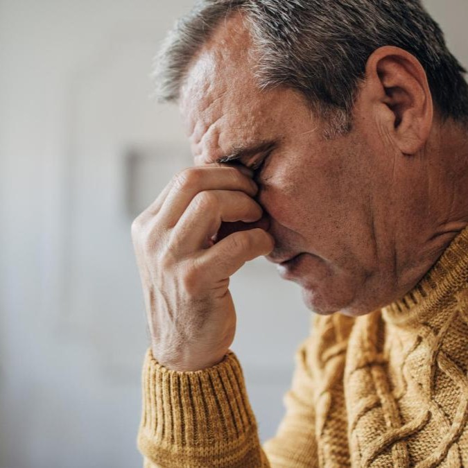
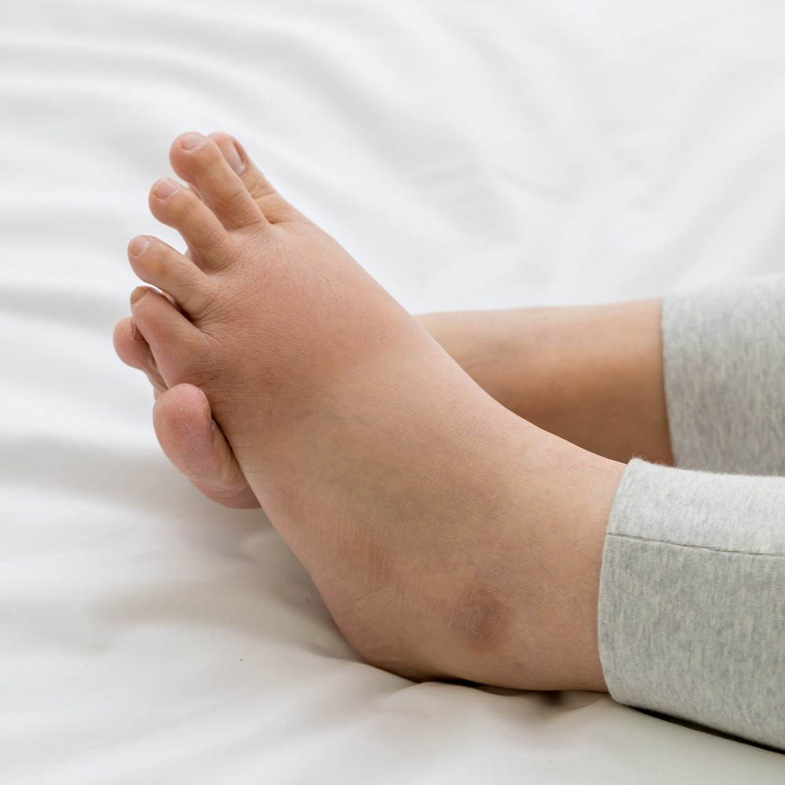

Esta información tiene un carácter meramente informativo. Para obtener asesoramiento o diagnóstico médicos, consulta a un profesional.
Los riñones son los grandes filtros de nuestro cuerpo, encargados de equilibrar los líquidos y eliminar toxinas. Sin embargo, tienen una característica particular: son órganos sumamente resistentes y discretos. En las etapas iniciales de la insuficiencia renal, es común que el cuerpo no envíe señales de alerta evidentes, lo que permite que la condición avance sin ser detectada.
A medida que la función renal disminuye y los desechos comienzan a acumularse en la sangre —un proceso conocido como uremia—, el organismo empieza a manifestar una serie de síntomas que pueden variar de una persona a otra. Reconocer estas señales de forma temprana no solo es clave para un diagnóstico oportuno, sino que puede marcar la diferencia en la preservación de la salud renal.
A continuación, detallamos los signos más comunes que indican que tus riñones podrían necesitar atención médica:
Los riñones sanos crean una hormona llamada eritropoyetina, o EPO, que le dice a tu cuerpo que genere glóbulos rojos que transportan oxígeno. Cuando los riñones fallan, generan menos EPO. Con menos glóbulos rojos para transportar oxígeno, tus músculos y tu cerebro se cansan muy rápido. Esto es la anemia, y se puede tratar.
"Siempre estaba agotado y no tenía nada de energía."
"Dormía muchísimo. Llegaba a casa del trabajo y me metía en la cama directamente."

La sensación de frío persistente, incluso en ambientes cálidos, tiene una raíz fisiológica directa en el mal funcionamiento de los riñones. El factor principal es la anemia renal. Como ya mencionamos anteriormente, los riñones sanos tienen la función vital de producir eritropoyetina, la cual actúa como una señal para que la médula ósea fabrique glóbulos rojos. Cuando la función renal disminuye, la producción de esta hormona cae drásticamente, lo que resulta en una escasez de glóbulos rojos en la sangre.
Dado que los glóbulos rojos son los encargados de transportar el oxígeno a todo el cuerpo, su disminución significa que las células no reciben el combustible necesario para generar energía y, por lo tanto, calor corporal. Ante esta deficiencia, el organismo activa un mecanismo de supervivencia: prioriza el envío de la poca sangre oxigenada hacia los órganos vitales (como el corazón y el cerebro), retirando el flujo sanguíneo de la piel y las extremidades. Es por esto que los pacientes suelen sentir que el frío "nace desde adentro" o que sus manos y pies están helados, ya que el termostato interno del cuerpo no tiene los recursos suficientes para mantener una temperatura estable en todo el sistema.
"Me doy cuenta de que a veces siento mucho frío. Tengo escalofríos."
"A veces, tengo mucho, mucho frío. Tal vez hace calor, pero yo tengo frío."
La falta de aire puede estar relacionada con los riñones de dos formas. Primero, fluido extra en el cuerpo puede acumularse en los pulmones. Y segundo, la anemia (falta de glóbulos rojos que transportan oxígeno) puede hacer que tu cuerpo esté privado de oxígeno y que te falte el aire.
"En los momentos cuando me falta el aire, me inquieto. Me asusta. Siento que me podría caer o algo así, y en general me siento por un rato."
"No podía dormir a la noche. No podía respirar bien, como si me estuviese ahogando o algo así. Y la hinchazón, no puedo respirar, no puedo caminar a ningún lado. Era terrible."
El cerebro es el órgano que más oxígeno consume en todo el cuerpo para funcionar correctamente. Cuando los riñones dejan de producir suficiente eritropoyetina, la cantidad de glóbulos rojos disminuye y, con ella, la capacidad de la sangre para transportar oxígeno. Esta condición, conocida como hipoxia relativa, significa que el cerebro recibe menos oxígeno fresco del que necesita para procesar información a alta velocidad.
Como consecuencia, las neuronas no pueden comunicarse con la misma eficacia, lo que el paciente experimenta como una neblina mental, olvidos frecuentes o una incapacidad para concentrarse en tareas cotidianas como leer o resolver acertijos. Por otro lado, los mareos y la sensación de debilidad o desmayo ocurren porque el sistema cardiovascular intenta compensar la falta de oxígeno ajustando la presión arterial; cuando este ajuste falla momentáneamente al ponerse de pie o realizar un esfuerzo, el cerebro sufre una breve caída de energía que provoca la inestabilidad física.
"Sé que le mencioné a mi esposa sobre mi memoria, no podía recordar lo que había hecho la semana pasada o tal vez hacía 2 días. No me podía concentrar de verdad, porque me gustan los crucigramas y leo mucho."
"Siempre estaba cansado y mareado."
La anemia relacionada con la insuficiencia renal significa que tu cerebro no está obteniendo suficiente oxígeno. Esto puede causar problemas de memoria, de concentración y mareos.
"Sé que le mencioné a mi esposa sobre mi memoria, no podía recordar lo que había hecho la semana pasada o tal vez hacía 2 días. No me podía concentrar de verdad, porque me gustan los crucigramas y leo mucho."
"Me levantaba para hacer algo y cuando llegué allí no podía recordar lo que iba a hacer."
La causa principal es la acumulación de desechos metabólicos en el torrente sanguíneo. Los riñones sanos actúan como una planta de tratamiento que filtra toxinas de forma constante; cuando este filtro falla, sustancias como la urea y el fósforo comienzan a concentrarse en niveles peligrosos. El exceso de fósforo, en particular, se une al calcio y puede formar pequeños cristales que se depositan en los tejidos y terminaciones nerviosas de la piel, provocando una irritación constante.
Además, la insuficiencia renal altera el equilibrio de los minerales y afecta las glándulas sudoríparas y sebáceas, lo que vuelve la piel extremadamente seca y quebradiza. Esta combinación de suciedad interna en la sangre y deshidratación externa de la piel envía señales de alerta continuas al cerebro en forma de picazón. En etapas avanzadas, el desequilibrio de la glándula paratiroides (que regula el calcio) también contribuye a que esta sensación sea tan intensa que los pacientes sientan la necesidad de rascarse hasta lastimarse, buscando un alivio que la piel superficial no puede proporcionar.
"No es una comezón de la piel realmente, se siente en los huesos. Tenía que conseguir un cepillo y escarbar. Tenía la espalda ensangrentada de rascarme tanto."
"Se me había agrietado la piel. Me picaba y me rascaba muchísimo."

Cuando los riñones fallan, no eliminan el fluido adicional que se acumula en tu cuerpo y provoca hinchazón en las piernas, los tobillos, los pies, la cara y/o las manos.
"Recuerdo que se me hinchaban mucho los tobillos. Se ponían tan grandes que no podía ponerme los zapatos."
"Al ir a trabajar una mañana, mi tobillo izquierdo estaba hinchado, hinchado, y estaba muy agotado caminando hacia la parada del autobús. Y supe entonces que tenía que ver a un médico."
El cuerpo humano es una máquina de precisión que regula la cantidad exacta de agua y sal (sodio) que necesitamos. Los riñones actúan como válvulas de escape: cuando bebemos más líquido del necesario, ellos lo filtran y lo expulsan. Sin embargo, cuando la función renal declina, estas válvulas se obstruyen. El exceso de sodio y líquidos que no puede ser eliminado comienza a filtrarse fuera de los vasos sanguíneos y se deposita en los tejidos blandos del cuerpo.
Debido a la gravedad, este líquido suele acumularse en los tobillos y pies durante el día; pero al estar acostados durante la noche, el fluido se redistribuye, provocando que los pacientes amanezcan con los párpados pesados y las mejillas visiblemente inflamadas. Además, la pérdida de proteínas a través de la orina (común en la enfermedad renal) reduce la capacidad de la sangre para retener el agua dentro de las venas, lo que facilita que el líquido se escape hacia la piel, causando esa sensación de tirantez y dolor que mencionan quienes lo padecen.
"Mi hermana, su cabello comenzó a caer, estaba perdiendo peso, pero su cara estaba realmente hinchada, ya sabes, y todo eso, antes de descubrir lo que estaba pasando con ella."
"Mis cheques siempre estaban hinchados y apretados. A veces incluso lastimarían."
La acumulación de desechos en la sangre (llamada uremia) puede hacer que la comida tenga un sabor diferente y provocar mal aliento. También es posible que notes que te deja de gustar la carne o que estás perdiendo peso porque no tienes ganas de comer.
"Sabor desagradable en la boca. Casi como si estuvieras bebiendo hierro."
"No tienes apetito como antes."
La causa principal es la uremia, que es la acumulación excesiva de urea y otros desechos nitrogenados en el torrente sanguíneo. En condiciones normales, la urea se expulsa a través de la orina; sin embargo, cuando los riñones fallan, esta sustancia comienza a circular por todo el cuerpo y llega a las glándulas salivales. Una vez en la boca, las bacterias de la saliva descomponen la urea, transformándola en amoníaco.
Este proceso químico es el que genera ese olor característico, similar a la orina o al pescado, que el cepillado dental no logra eliminar por completo porque el origen es interno, no bucal. Además, esta presencia de amoníaco y toxinas altera las papilas gustativas, provocando un sabor metálico persistente. Esto explica por qué muchos pacientes pierden el apetito o desarrollan una aversión repentina a alimentos ricos en proteínas, como la carne roja, ya que les saben amargas o echadas a perder, lo que deriva en una pérdida de peso involuntaria.
"Mi esposo siempre me dice que tengo aliento de pescado."
"Algunas veces mi aliento huele a orina y necesito cepillarme los dientes con más frecuencia."